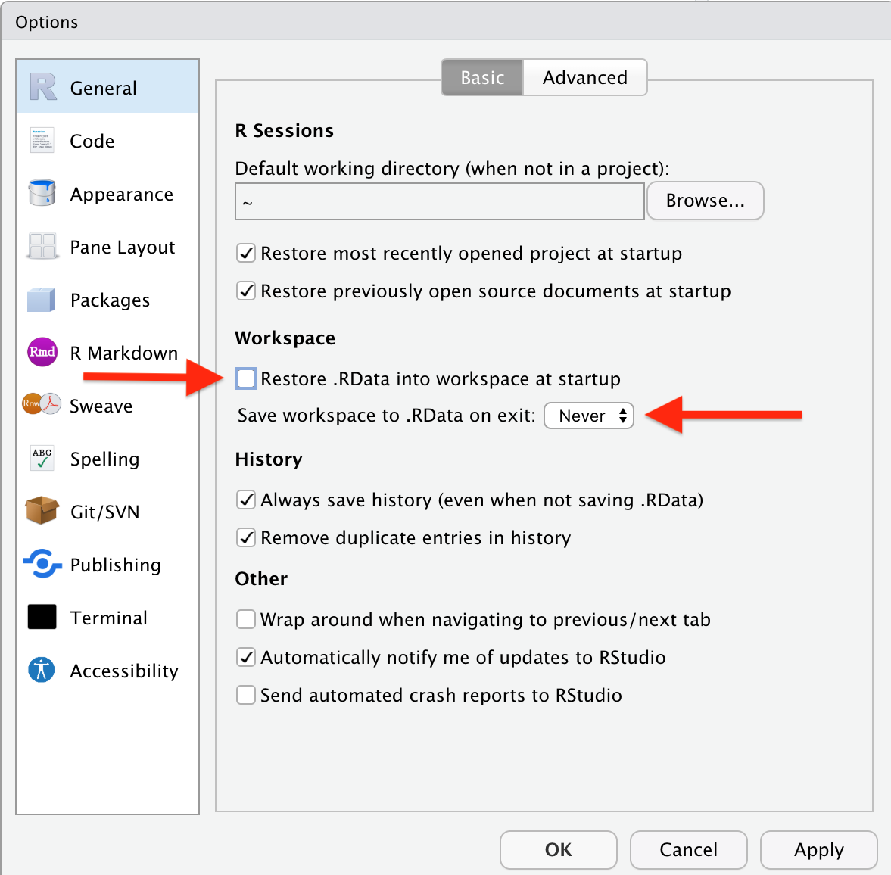

| Status |
|---|
| This chapter is currently a dumping ground for ideas, and we don’t recommend reading it. |
3 Getting Started with R for Econometrics
3.1 A Brief History of R
John Chambers, working at Bell Laboratories, developed S programming language for statistical analysis. This programming language was incorporated in the commercial program S-plus. Inspired by this programming languagage, tw o statistics professors Robert Gentleman and Ross Ihaka developed a reduced version of S, which they named R.
R was first released in 1993. In 1995, another statistician Martin Mächler convinced Gentleman and Ihaka to make R source code available to general public. As a result, R became free and open source under GNU General Public License.
R also has a robust community of users. As of writing this, there are 19,719 user-developed packages on Comprehensive R Archive Network (CRAN), which distributes the R source code and packages. Apart from CRAN, many more packages are also available on code sharing platform github. Users can download packages from github as well. The Appendix A explains how to install packages from CRAN and from github.
How to Install R
You can install R from the website of CRAN. Downloadable files and instructions to download and install R for all the major operating systems are available on this website. R can be downloaded and installed on Windows, Mac and Linux platforms.
It is possible to use R right from within this R Graphical User Interface (R-Gui). But such a work will not be reproducible. It means, you will be able to work on your system, but you won’t be able to share that work with others. IDE like RStudio makes it much easier to work in R, and to share your work with others.
How to Install RStudio
Once you have installed R for your operating system, you can visit the website of RStudio. Just like R, RStudio is also available on Windows, Mac and Linux platforms.
Useful Settings in RStudio
I would recommend you not to save the workspace in RStudio. This setting can be disabled in RStudio as follows:

This setting (of not saving your workspace) seems counter-intuitive. But it helps you in the longer term. Assume you have to share your work with someone else. The other person might not have the same settings of computer in his/her system. So, the work on your system might look different in that system. Instead, you should save the R Script (or even better, a Quarto document) in your system, and should share it.
The Concept of Working Directory
R has a concept of working directory. When you save your R script and your work, it gets saved in the “working directory” of R. You can find and change the working directory using R commands.
# Find the working directory
getwd()
#Change the working directory
setwd("Path/to/another/folder")Quarto
Quarto is a new open-source scientific and technical publishing system developed by Posit (the maker of RStudio). Quarto is designed to be useful to anyone who wants to create reproducible documents. A Quarto document contains both - the code and the prose. For example, if you are running regression analysis in R, R Script will only contain your code, but a Quarto document will contain your R code and your interpretation of the regression results. Quarto runs computations into separate pluggable language “engines”, which helps make this cross-language functionality easier to support .
Here are some points that emphasize the reproducibility of Quarto over R scripts:
Cross-language support: Quarto is designed to work with multiple languages, including Python, bash, Julia, C, SQL, and more. This makes it easier to work with different languages in the same document.
Built-in output formats: Quarto generates the output in various formats like Microsoft Word, HTML, PDF, beamer, revealjs, etc. It also has many options for customizing each format.
Native features for special project types: Quarto has native features for special project types like websites, books, and blogs. This means that you don’t have to rely on external packages. As a matter of fact, this book is written entirely using Quarto in RStudio.
Easier rendering: Quarto isn’t an R package. It’s a command-line interface that makes it much easier to work with Quarto documents outside of the RStudio IDE. You can also use Quarto in other IDEs like VS Code.
These features make Quarto a better choice than R scripts when it comes to reproducibility. With Quarto, you can easily create documents that are easy to reproduce and share with others.
Optional: Installing
If you want to work in Quarto, and want to generate PDF output, is required. There are two popular distributions: MiKTeX and TeX Live. However, I prefer another distribution, called TinyTeX. It’s a light weight distribution of , and works well with R. You can install it using R as follows:
#install tinytex R package
install.packages("tinytex")
#load it in R
library(tinytex)
#use this package to install LaTeX compiler TinyTeX
install_tinytex()These commands install the most commonly used packages into your system. However, if you want to install all the packages, you can do so by using install_tinytex(bundle = "TinyTeX-2") instead of install_tinytex() function above.